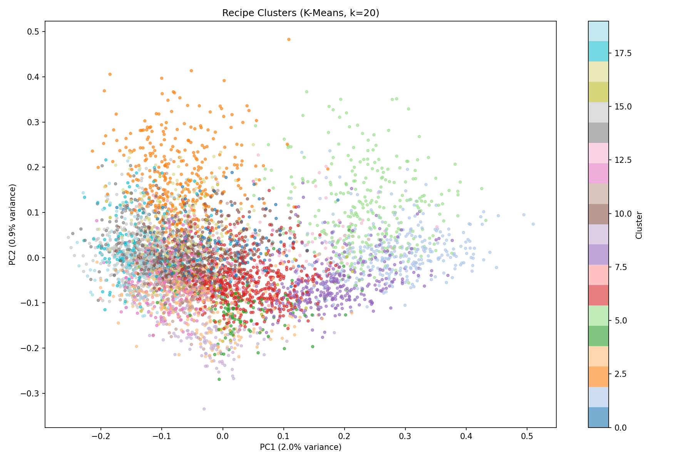
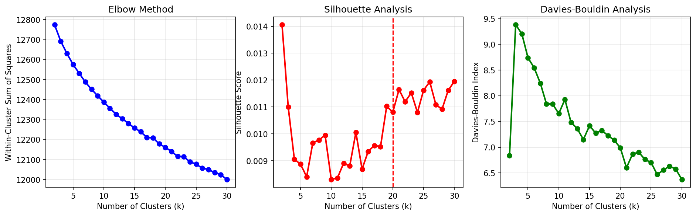

Pantry-Aware Recipe Recommender
Multi-Objective Recipe Recommendation with Pantry, Nutrition, Sustainability, Taste, and Visual Signals
Final Report
Overview
Most recipe recommenders optimize primarily for similarity, popularity, or collaborative-filtering signals. This project explores a broader recommendation objective: suggest recipes that are practical given a user's pantry while also considering taste, nutrition, sustainability, and visual similarity.
The project combines three complementary approaches: ingredient-based ranking with TF-IDF and K-Means, a LightGBM-based multi-objective pipeline for taste, nutrition, and sustainability, and ResNet50 image embeddings for visual retrieval.
Data Sources
- Food Ingredients and Recipes Dataset with Images: 13,582 recipes with ingredient lists and corresponding images.
- Food.com: more than 230,000 recipes with ingredients, nutrition fields, and approximately 1.1M user ratings.
- Open Food Facts: product-level nutrition and environmental information, including Nutri-Score and Eco-Score.
Data & Preprocessing
Ingredient normalization
Ingredient strings were normalized by lowercasing, removing quantities and measurement units, removing preparation descriptors, handling aliases, and lemmatizing terms. Fuzzy matching was used to improve pantry coverage when ingredient wording differed slightly.
Quantity-aware parsing preserved structured representations such as {quantity, unit, name} when possible so that downstream sustainability estimates could incorporate approximate ingredient mass instead of treating every ingredient equally.
Text and image features
Normalized ingredient text was represented with TF-IDF features. Food images were resized and normalized for a pretrained ResNet50, producing 2048-dimensional embeddings used for similarity-based retrieval.
Modeling Approaches
1. Pantry-Aware K-Means Ranking
Recipes were represented using TF-IDF ingredient features and clustered with K-Means. Final recommendation scores combined cosine similarity, pantry coverage, cluster affinity, and a sustainability term. A complexity penalty reduced the tendency to over-rank trivially short recipes.
The weighted ranking used TF-IDF similarity, pantry coverage, cluster score, and sustainability with default weights of 0.3, 0.3, 0.2, and 0.2.

PCA projection of recipe clusters for K = 20.

Elbow, silhouette, and Davies–Bouldin analyses used during cluster selection.
Average pantry coverage improved from 68% in the baseline to 72% in the K-Means-based system. The clustering metrics also showed that the sparse ingredient space was not strongly separated, so clustering is best interpreted as a candidate-grouping heuristic rather than evidence of naturally distinct cuisine clusters.
2. LightGBM Multi-Objective Ranking
The second approach used three LightGBM models: a binary taste classifier based on Food.com ratings, a nutrition regressor for Nutri-Score, and a sustainability regressor for Eco-Score. Feature engineering combined nutritional macros, recipe metadata, and compact text features derived from TF-IDF and SVD.
At recommendation time, recipes were filtered by pantry coverage and ranked using a weighted combination of predicted taste, nutrition, and sustainability. The final score prioritized taste slightly more heavily while still rewarding healthier and more sustainable options.
Taste classification
The taste model achieved 96.2% recall for highly rated recipes. Overall accuracy was 62.5%, only slightly above the majority-class baseline of 62.2%, so the classifier is better viewed as a high-recall quality filter than as a high-confidence taste predictor.
Nutrition prediction
The nutrition model achieved R² = 0.923 with RMSE = 2.46, showing strong predictive fit relative to the Nutri-Score range.
Sustainability prediction
The sustainability model achieved R² = 0.695 and Spearman ρ = 0.836. The ranking correlation was especially useful because recommendation quality depends more on ordering recipes consistently than on perfectly reproducing every score.
3. ResNet50 Visual Retrieval
A pretrained ResNet50 was used as a feature extractor rather than fine-tuned end-to-end. Recipe images were mapped to 2048-dimensional embeddings, and cosine similarity was used to retrieve visually related dishes.
The visual retrieval system reached roughly 91% hit rate at K = 10, with MRR around 0.49. This provided a complementary discovery signal, although image similarity alone cannot infer nutritional quality or ingredient quantities.
Model Comparison
| Approach | Primary Strength | Main Limitation |
|---|---|---|
| TF-IDF + K-Means | Pantry-aware ingredient matching and interpretable ranking factors | Weak natural cluster separation and heuristic sustainability estimates |
| LightGBM | Quantitative nutrition and sustainability prediction with multi-objective ranking | Taste classification is close to the majority baseline in accuracy; cross-dataset domain mismatch |
| ResNet50 embeddings | Visual similarity and intuitive image-based discovery | Does not directly model pantry, nutrition, or ingredient quantities |
Limitations
- Ingredient quantity parsing remains difficult for complex strings such as package sizes and parenthetical measurements.
- Missing ingredient carbon-footprint values require fallback assumptions, so sustainability scores should be interpreted as estimates.
- The sustainability model is trained on Open Food Facts product text but applied to Food.com recipe text, creating a domain mismatch.
- The visual model uses pretrained embeddings rather than task-specific fine-tuning.
Future Work
Future work could combine the three approaches into a single multimodal ranking pipeline, improve ingredient parsing and alias coverage, incorporate better life-cycle-assessment data, add dietary restrictions and user preferences, and validate multi-objective ranking weights with user studies or A/B testing.
Team Contributions
| Team Member | Contributions |
|---|---|
| Eileen Chen | Model 1 cleaning; Model 3 implementation; report |
| Euan Ham | Model 1 cleaning/preprocessing; Model 3 implementation, evaluation, visualization; webmaster |
| Taeho Kim | Model 1 implementation; Model 2 implementation and evaluation; final presentation materials |
| Inho Lee | Model 1 implementation; Model 2 implementation and evaluation; final presentation materials |
| Kimberly Tsung | Model 1 evaluation; report |
References
- Tian et al., “RecipeRec: A Heterogeneous Graph Learning Model for Recipe Recommendation,” 2022.
- Tian et al., “Recipe Recommendation With Hierarchical Graph Attention Network,” 2022.
- Gao et al., “Food recommendation with graph convolutional network,” Information Sciences, 2022.
- Ouyang et al., “Multimodal Recipe Recommendation with Heterogeneous Graph Neural Networks,” 2024.
- Sinclair et al., “Sustainability in food-based dietary guidelines,” Annals of Medicine, 2025.